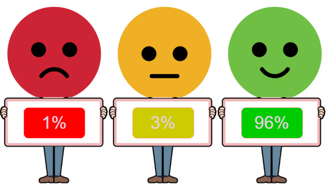

📊 Dashboard – Visitas à Cidade da Criança (Página 3)
Avaliação Subjetiva por parte dos alunos

| Indicador avaliado | Resultado | Interpretação |
|---|---|---|
| Total de crianças participantes | 3.828 | Alto alcance e adesão qualificada ao circuito. |
| Escolas participantes | 108 | Forte capilaridade e integração com redes de ensino. |
| Avaliação “Ótimo” | 96% | Experiência altamente satisfatória e encantadora. |
| Avaliação “Neutro” | 3% | Margem esperada; perfis em adaptação. |
| Avaliação “Ruim” | 1% | Rejeição mínima, reforçando a qualidade geral. |
Importância da Avaliação das Crianças nos Circuitos Sensoriais da Cidade da Criança
A avaliação das crianças sobre suas experiências nos circuitos sensoriais é um componente essencial para que a Cidade da Criança funcione como política pública viva, construída com as crianças e não apenas para elas. Abaixo, estão organizados os principais motivos dessa importância.
1. Coloca a criança como protagonista da política pública
Ao perguntar às crianças como elas se sentiram, o que mais gostaram, o que deu medo, cansaço ou encantamento, a gestão:
- Reconhece a criança como sujeito de direitos e de opinião, não apenas como “participante” passiva.
- Se alinha à Convenção sobre os Direitos da Criança, que garante o direito de ser ouvida em tudo o que lhe diz respeito.
- Fortalece uma cultura de escuta qualificada da infância na formulação, monitoramento e ajuste das ações.
Exemplo: quando 96% das crianças avaliam o circuito como “ótimo”, isso mostra não só satisfação, mas coerência entre a proposta do circuito e o universo infantil.
2. Gera evidências para melhorar o desenho dos circuitos
A opinião das crianças responde perguntas que só elas conseguem responder com precisão:
- Os circuitos estão desafiadores na medida certa (nem difíceis demais, nem “bobos” demais)?
- Os percursos são claros, seguros e interessantes do ponto de vista delas?
- Existem estações que são:
- ignoradas,
- cansativas,
- confusas ou repetitivas?
- Há momentos em que elas se sentem:
- com medo,
- sobrecarregadas,
- desmotivadas?
Com isso, a avaliação infantil permite:
- Ajustar o circuito
(ordem das estações, mediação dos educadores, tempo de permanência em cada ponto). - Criar ou priorizar novas experiências inspiradas no que mais mobiliza curiosidade, riso, exploração e perguntas.
3. Conecta experiência sensorial com desenvolvimento integral
Os circuitos sensoriais não são apenas “brincadeiras”: eles articulam corpo, emoções, linguagem, imaginação e convivência.
A avaliação das crianças ajuda a enxergar se:
- Elas estão conseguindo nomear e expressar sentimentos (medo, surpresa, alegria, curiosidade, nojo, encantamento).
- O circuito favorece autonomia e exploração, ou se tudo é excessivamente guiado pelo adulto.
- Há espaço para:
- criar narrativas,
- perguntar,
- repetir atividades,
- experimentar de outro jeito.
Assim, a avaliação contribui para verificar se o circuito está realmente promovendo desenvolvimento integral, e não apenas entretenimento.
4. Alimenta monitoramento, gestão e prestação de contas
Do ponto de vista da gestão pública, a escuta das crianças é um insumo valioso para:
- Mostrar que o equipamento não apenas atende muitas crianças, mas atende bem.
- Complementar os dados quantitativos (ex.: número de crianças e escolas atendidas) com dados qualitativos, como:
- percentual que achou “ótimo”, “bom” ou “regular”,
- quais espaços marcaram mais,
- quais sentimentos aparecem com frequência.
- Fortalecer relatórios e apresentações para:
- Prefeitura,
- conselhos de direitos,
- órgãos parceiros,
- financiadores e apoiadores.
Em síntese, a avaliação infantil ajuda a demonstrar que a Cidade da Criança é uma política baseada em evidências, e que essas evidências incluem a voz das crianças.
5. Revela desigualdades e pontos cegos
A escuta qualificada das crianças também permite identificar:
- Se há grupos que se sentem menos à vontade ou menos incluídos, como:
- crianças com deficiência,
- crianças mais tímidas,
- crianças muito sensíveis a ruídos e estímulos.
- Se alguma parte do circuito é pouco acessível ou excludente.
- Se determinadas experiências funcionam melhor para algumas faixas etárias do que para outras.
A partir disso, é possível fazer ajustes que tornem a Cidade da Criança cada vez mais:
- Inclusiva
- Equitativa
- Coerente com a perspectiva de direitos humanos da infância.
6. Gera pertencimento e memória afetiva
Quando a criança é convidada a avaliar sua experiência:
- Ela percebe que sua opinião importa para a cidade.
- Cria um vínculo de pertencimento com o equipamento (“a cidade me escuta”).
- A visita deixa de ser apenas um passeio e passa a ser uma memória afetiva de cidadania.
Essa dimensão simbólica é tão importante quanto a pedagógica: a criança se reconhece como sujeito de direito e voz em um equipamento público.
Frase de síntese para relatório, slide ou dashboard
“A avaliação das crianças sobre os circuitos sensoriais é fundamental porque coloca a infância no centro da decisão pública, gera evidências para qualificar o circuito, monitora o impacto real da política e garante que a Cidade da Criança seja construída com as crianças, e não apenas para elas.”